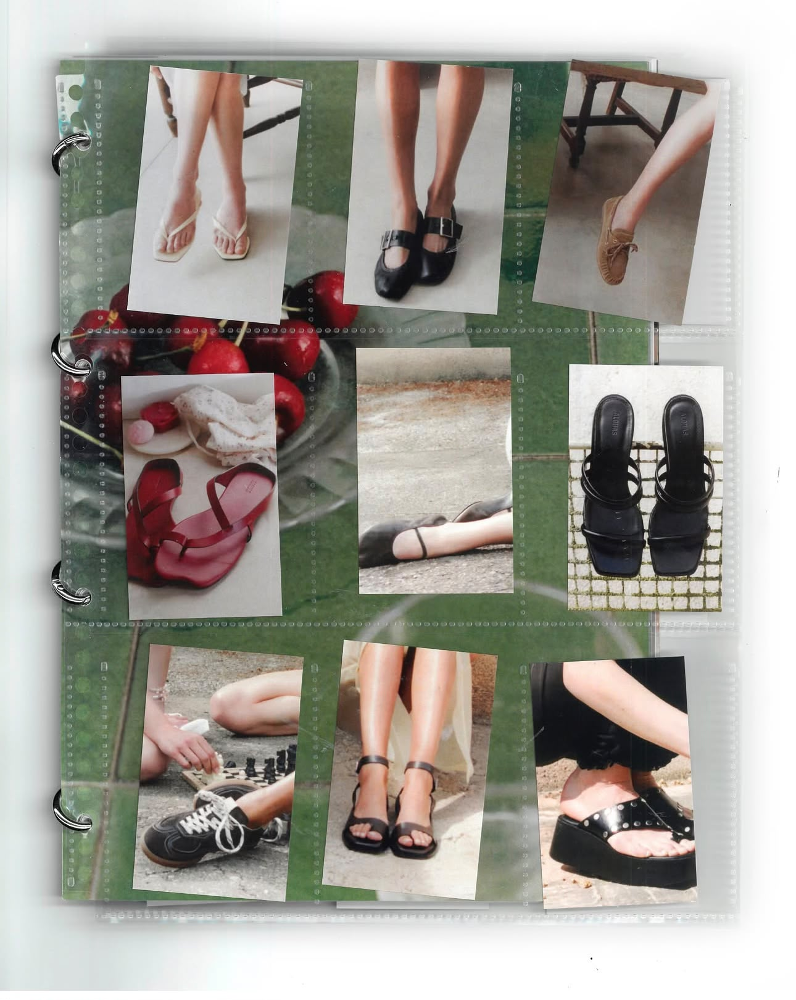

Spanje
Alohas is een schoenenmerk uit Barcelona, opgericht in 2016, dat gelooft dat mode anders kan met een on-demand productiemodel dat duurzame, grotendeels handgemaakte stukken oplevert. Door pas te produceren op basis van daadwerkelijke vraag, voorkomt het merk overproductie en verspilling, en beloont het bewuste, geduldige shoppers met korting tijdens elke lanceerfase.